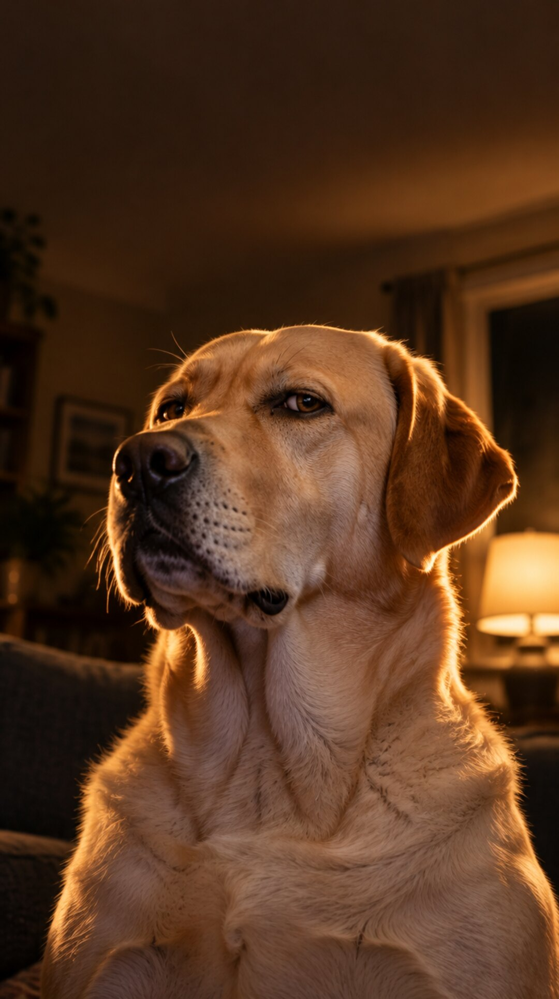
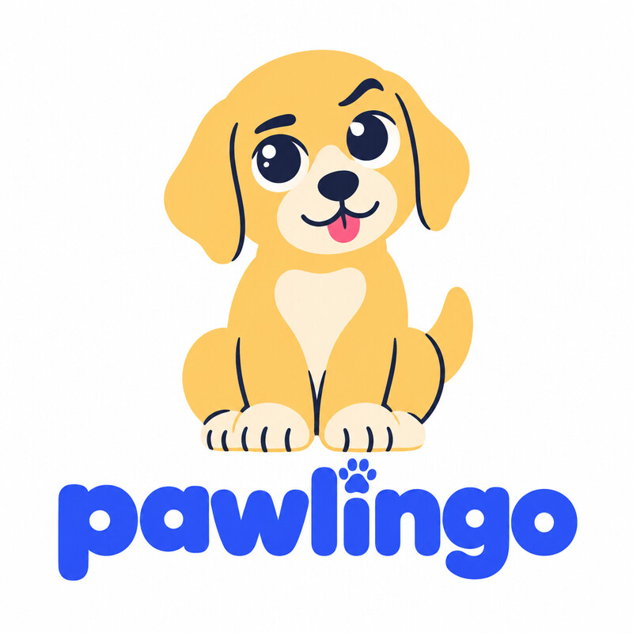
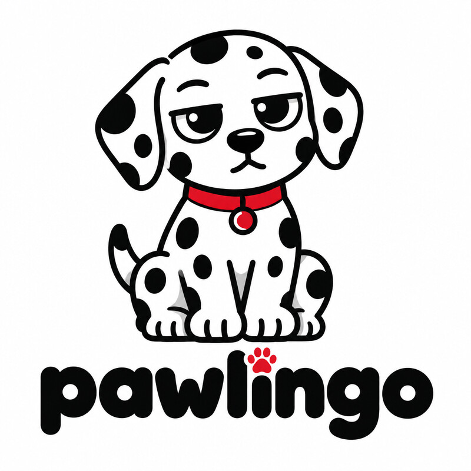
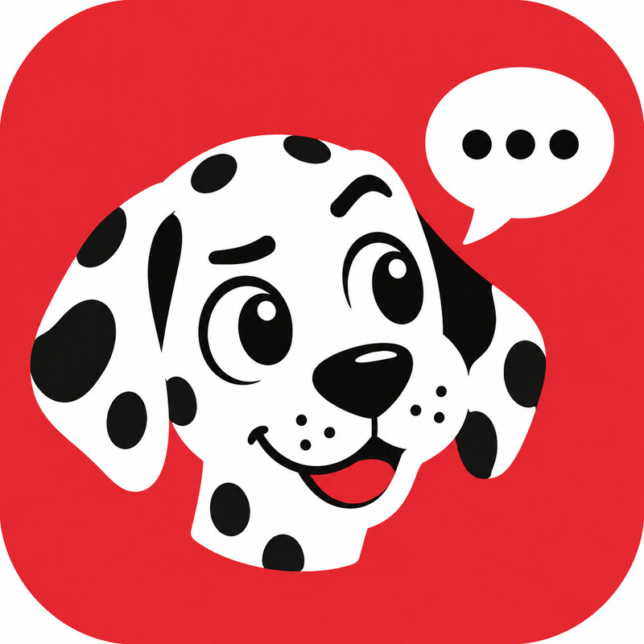
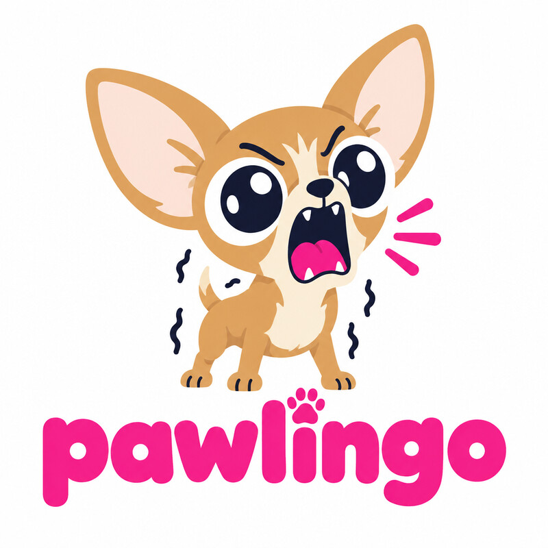
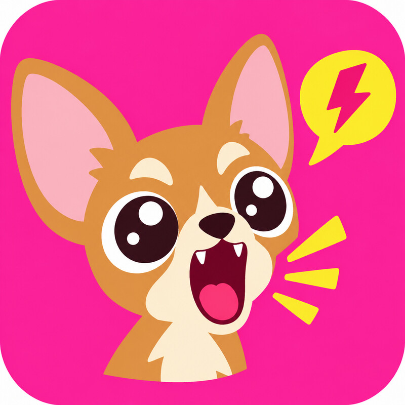
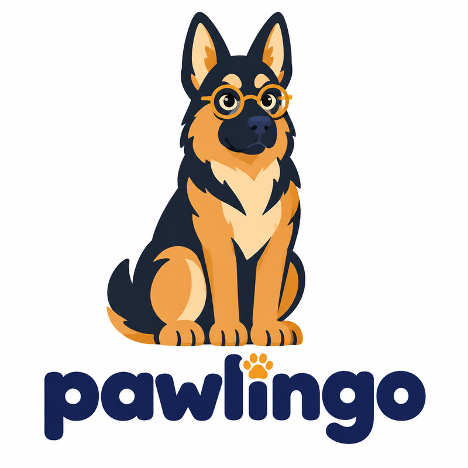
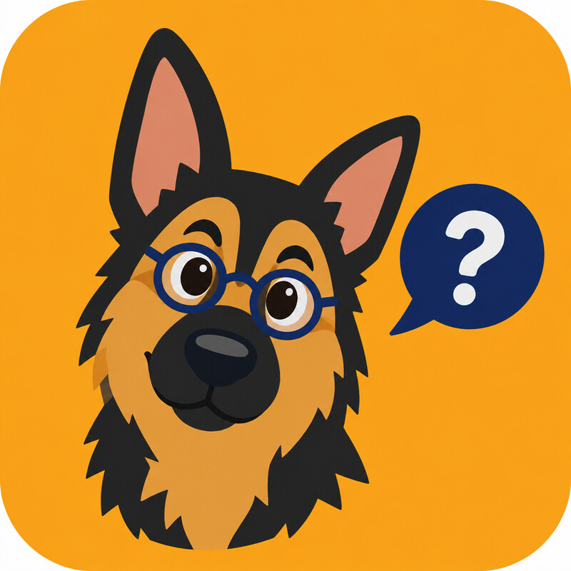
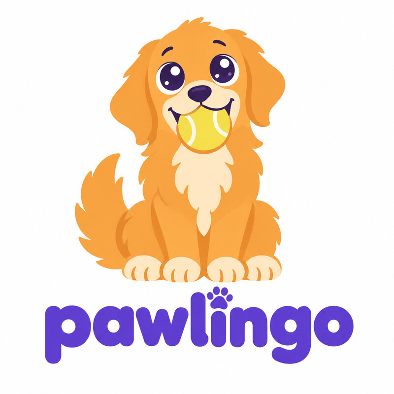

Worked example · Facebook Ads Live Build
pawlingo
Learn dog. Five minutes a day.
Your dog has heard every secret you have ever said out loud. This deck answers every question from the live build for an app that finally lets it talk back.
A fictional brand for demonstration. Images, video and voice made with Higgsfield. Demo figures are labelled.
How to use this deck
Every ask in the live build, answered for one cheeky brand.
The ask
The question the slide asked the room
Shown small, at the top of every slide.
Our answer
What Pawlingo wrote
Big, specific and as cheeky as a Labrador near a sausage roll.
Your turn
Swap the dog for your business
Same prompt, same skill, your brand.
If it works for an app that translates dogs, it works for you.
02 · Pawlingo is a fictional brand for demonstration
Part 01 · Brand kit
Sit. Stay. Brand.
Before a single ad: who are Pawlingo, what do they stand for, what do they look like, and how do they sound?
The ask: eight questions before you write a single ad
The Pawlingo brand kit, on one page.
Purpose
Your dog has listened to every word you’ve said. Your turn to listen back.
Values
The dog’s side, always. Five minutes, not fifty. Funny, but true.
Position
The language app where the dog is the teacher and you’re the one in training.
Audience
Tom, 36. Tells Nugget the Labrador things he hasn’t told his wife.
Tone of voice
A golden retriever who has read your diary. Cheeky, loyal, never crude.
Visual identity
Squeaky-toy blue, biscuit yellow. A raised eyebrow on every mascot.
Proof
Lessons built on dog body-language research. [Real behaviourist name here.]
Offer
Free daily lessons. Pawlingo Plus £4.99 a month, 7-day free trial.
04 · Pawlingo is a fictional brand · prices illustrative
The ask: a logo you could draw from memory · ten routes from Higgsfield
Five breeds, two forms each: full mascot and app icon.

1 · Labrador
2 · Labrador icon · our pick

3 · Dalmatian

4 · Dalmatian icon

5 · Chihuahua

6 · Chihuahua icon

7 · Alsatian

8 · Alsatian icon

9 · Golden Retriever
10 · Golden icon
05 · Generated with GPT Image 2.5 in Higgsfield · original mascots · run a trademark search before real use
The ask: what changes in the world because you exist?
Your dog has listened to every word you’ve said. It’s your turn to listen back.
The drafts we buried in the garden
Rejected: “Strengthening the human-pet bond.” Every vet, insurer and treat brand already says it.
Rejected: “AI-powered dog translation.” A feature, not a reason. And not quite true.
The winner: flips who’s been failing whom. The dog was never the bad listener.
06 · Pawlingo is a fictional brand for demonstration
The ask: three things you’d lose a sale to protect
Values that cost us something.
The dog’s side, always
We teach you to understand him, not to correct him. No shock collars in the shop, no “dominance” tips.
Cost: we turn down every training-gadget sponsor.
Five minutes, not fifty
Lessons stop at five minutes. Then we tell you to go and play with your actual dog.
Cost: less screen time than any app wants.
Funny, but true
Every joke sits on real dog behaviour. Live Translate is for laughs, and we say so.
Cost: we can’t claim “100% accurate”.
07 · Pawlingo is a fictional brand for demonstration
The ask: fill in the blanks, then try to steal it
For dog owners who talk to their dog every day and only understand half of what comes back, Pawlingo is the language app that teaches you to speak dog, unlike training apps that only teach the dog to obey you, because the dog is the teacher and you’re the one in training.
The steal test: pass
A training app can’t say “you’re the one in training” without undoing its whole product.
The enemy test: pass
Our enemy is the one-way relationship: owner talks, owner guesses, dog sighs.
08 · Pawlingo is a fictional brand for demonstration
The ask: how tired is your market of hearing it?
Every dog app says “train your dog in 7 days”. We’re at stage 3.
1
First claim
2
Bigger claim
3
New mechanism
Our lead: the dog teaches you
4
Better mechanism
5
Identity
Our twist: he knows all your secrets
From the Meta Ad Library (demo): dog apps all promise obedience, fewer accidents, a calmer dog. Nobody sells the relationship. So we lead with the reversed mechanism and season it with the secret-keeper.
09 · Eugene Schwartz, Breakthrough Advertising · Ad Library finding is illustrative
The ask: one person, described like a friend
Meet Tom, 36. Nugget knows more about him than his wife does.
A normal Tuesday: works from home, walks Nugget at lunch, narrates his whole day to a Labrador.
Has tried: YouTube at 1am on “why does my dog stare at me”. Three training apps, deleted by day four.
His words: “I tell him everything. I just wish I knew what he thought about it.”
Pain, Urgent, Pay
Pain: yes. Guilt and guessing.
Urgent: weakest. Spikes with a new puppy.
Pay: yes. £4.99 is less than a bag of treats.
So: lead with the free tier, and time spend for Christmas puppies and January.
10 · Tom and Nugget are invented · Pawlingo is fictional
The ask: set the four tone dials on purpose
A golden retriever who has read your diary.
Funny ●○○○○ Serious
Casual ●○○○○ Formal
Irreverent ○●○○○ Respectful
Enthusiastic ●○○○○ Matter-of-fact
Cheeky, never crude. Loyal, never needy. Nosy, never nasty.
Dog innuendo bank (one per ad, max)
“Heavy petting. Light learning.” · “Fluent in tongue.” · “He’s been sniffing around your secrets.” · “Who’s a good listener?” · “Off the lead and on the record.” · “Ruff day? He knows.” · “Got a bone to pick with you.”
Before / after
“Our app helps you understand your dog’s behaviour.”
“He’s not ‘just being a dog’. He’s been leaving you voice notes for years.”
11 · Tone dimensions after Nielsen Norman Group · Pawlingo is a fictional brand
The ask: colours, type, photo style, logo rules
Real dogs, real homes, one blue phone.
Squeaky blue #3B5BFF
Biscuit #F6B73C
Cream #FFF6E8
Ink #1D1B2E
pawlingo in Baloo 2, all lower case. Body in Google Sans. Photos: one dog, one human, warm evening light, the phone glowing blue. The translation always appears as a blue card.
Never: a dog that looks scared or told off, a cartoon dog in live action, or text that implies the translation is literal.
12 · Image generated with Higgsfield · Pawlingo is a fictional brand
The ask: proof and offer · what they get, what it costs, why now
Free to sniff. Plus to stay.
Free
Daily 5-minute lesson
Tails, ears, sighs and side-eye. One breed pack included.
Pawlingo Plus · £4.99 a month
Live Translate + every breed
Labrador, Dalmatian, Chihuahua, Alsatian, Golden Retriever dialects. 7-day free trial.
The Good Boy Guarantee
Cancel in two taps
No guilt-trip screens. No sad-puppy pop-up. Promise.
Why now: the January puppy rush. Launch price £29.99 a year until 31 January. Proof we still need: “[REAL REVIEW HERE]” and a named behaviourist. Never invent either.
13 · Value equation after Alex Hormozi · Prices and dates are illustrative
The ask: transformation statement and social pitch
From… to…
From “I wish I knew what he was thinking” to “I know exactly what he thinks, and he’s judging me”.
Name
We’re Pawlingo.
Same
We make a language-learning app.
Fame
The only one where the teacher is your dog. [Real number of lessons completed here.]
Pain
Most owners talk to their dog every day and guess what comes back.
Aim
Right now we’re launching the Labrador pack.
Game
We believe every dog deserves to be understood. And every secret deserves to be kept.
14 · Social Pitch after Daniel Priestley · Pawlingo is a fictional brand
Part 02 · Insight
Data says owners talk to their dogs. Insight says they confess.
The dog is the only one who has heard everything, and it has never said a word.
The ask: data, insight, execution
Owners don’t just talk to their dogs. They tell them everything.
Data
Top comments under dog videos: “he knows things about me nobody else does”, “I rant to her after every work call”, “if he could talk I’d be in prison”. (Illustrative)
Insight
The dog is the one confidant who never judges and never tells. Because it can’t. Yet.
Execution
Give the dog a voice, and let it use everything it has heard. Comedy from leverage.
16 · Comment examples are illustrative · Pawlingo is a fictional brand
The ask: which human needs do you really serve?
It’s not about the dog’s vocabulary. It’s about being understood back.
Life-Force 8 · no. 7
Care for loved ones
Is he happy? Bored? Ill? Tension: he can’t tell you.
Life-Force 8 · no. 8
Social approval
The clip everyone shares. Tension: your dog’s best moments happen when nobody’s filming.
Learned want
Curiosity
“What is he thinking?” Paired with care: “understand him in five minutes a day”.
17 · Life-Force 8: Drew Eric Whitman, Cashvertising · Pawlingo is a fictional brand
The ask: three insights with tension in them
I want… but… because… So our ad should…
1
“I want to know what he’s thinking, but I’m scared of the answer, because I’ve told him everything.”
So our ad should let the dog use it.
2
“I want to understand his behaviour, but training apps make me feel like a bad owner, because they’re all about correcting him.”
So our ad should make the human the student.
3
“I want to learn, but I quit every app by day four, because they nag.”
So our ad should let the dog do the nagging. He already does.
18 · Pawlingo is a fictional brand for demonstration
The ask: what 10 beliefs must they hold to buy from you?
Every missing belief is a headline.
| Belief Tom needs | Holds it? | Headline that installs it |
|---|---|---|
| My dog is trying to tell me things | Yes | (Already true. Use it.) |
| Dog behaviour can actually be learned | No | “Ears, tail, sigh. Three words of Labrador before your coffee’s cold.” |
| Five minutes a day is enough | No | “Shorter than his morning sniff.” |
| It’s not just a gimmick | Unsure | “Live Translate is for laughs. The lessons are for real.” |
| I won’t quit by day four | No | “Miss a lesson and he’ll stare at you. You know the stare.” |
| Cancelling won’t be a nightmare | Unsure | “Cancel in two taps. No sad-puppy pop-up.” |
19 · 10 beliefs prompt after Daniel Priestley · showing 6 of 10 · Pawlingo is fictional
Part 03 · Facebook statics
Fetch the thumb.
Three angles, one frame each, made with Claude and Higgsfield. Then a test to find the winner.
The ask: set Facebook up to find your people
Let the dog find the dog people.
| Setting | Pawlingo choice |
|---|---|
| Objective | App promotion, optimised for trial starts |
| Audience | Broad: UK, 22 to 55. No interest targeting. The Labrador does the targeting. |
| Placements | Advantage+ (feed, Stories, Reels) |
| Creative | Three genuinely different angles, not three button colours |
| Tracking | Meta SDK in the app: install, trial start, subscribe |
| Budget | £30 a day for round one [illustrative] |
21 · Check Meta’s current guidance · Pawlingo is a fictional brand
The ask: 20 hooks before you judge one
Twelve of our twenty. The top three are gold.
1 · He’s heard all your secrets. Now he can talk.
2 · You’ve been training the wrong one.
3 · He’s fluent in human. Time you learned dog.
That sigh? It was about you.
Five minutes a day. Shorter than his morning sniff.
Your dog has a bone to pick with you.
Heavy petting. Light learning.
What he really means when he brings you one sock.
Fluent in tongue. Now fluent in bark.
Who’s a good listener? Not you.
Your Labrador has opinions about your ex.
Ruff day? He knows. He always knows.
22 · Ranked on evidence, not taste · Pawlingo is a fictional brand
The ask: three statics, three angles · same layout, same CTA
23 · Angle 1 secret-keeper · Angle 2 reversal · Angle 3 effort · Images from Higgsfield · Fictional brand
The ask: would Facebook reject this?
Joke about the situation. Never about the viewer.
Rejected: “Lonely? Your dog’s the only one who listens.”
Approved: “Your dog listens to everything. Now you can listen back.”
Rejected: “Real dog translation. 100% accurate.”
Approved: “Live Translate is for laughs. The lessons are for real.”
Rejected: anything that goes past “heavy petting”.
Approved: “Heavy petting. Light learning.” Deniable, and about the dog.
24 · Meta personal attributes and adult content rules · UK consumer law on claims · check current policy
The ask: a carousel that earns the swipe, shaped with HSTSS
Six cards. One very well-informed Labrador.
1 · Hook
Your dog has a secret.
2 · Stakes
It’s yours. All of them.
3 · Turn
He’s been trying to tell you something for years.
4 · Scene
Ears back + slow blink = “I love you, but you’re wrong.”
5 · Shatter + offer
Five-minute lessons, free. Plus from £4.99.
6 · Repeat the hook
Learn what he’s been saying.
Primary text: “He’s heard everything. Swipe to hear his side.” Card headlines under 40 characters.
25 · HSTSS: Hook, Stakes, Turn, Scene, Shatter (Vishen Lakhiani) · Fictional brand
The ask: one angle, three narratives
Angle 2, “you’ve been training the wrong one”, told three ways.
Problem, Agitate, Solve
Six weeks of “sit”. He sits when he feels like it. Turns out he’s been asking for something the whole time. Pawlingo: learn what.
Before, After, Bridge
Before: shouting “leave it” at a confused dog. After: you spot the ears and he never grabs it. Bridge: five-minute lessons on what he’s saying.
Pope in the Pool
The boring bit (how to read a tail wag) taught by Professor Alsatian in round glasses, who keeps getting distracted by a squirrel mid-lesson.
26 · Pope in the Pool: Blake Snyder, Save the Cat · Pawlingo is a fictional brand
The ask: lead ad form and the follow-up email
Catch the owner. Then write like the dog.
Lead form: 3 questions
Name · Email (pre-filled) · What’s your dog’s name?
Thank-you screen: “Nugget’s first lesson is in your inbox. He’s already judging your accent.”
Five subject lines
Curiosity: Nugget has been trying to tell you something
Benefit: Three words of Labrador before breakfast
Question: What does the head tilt actually mean?
Number: 5 minutes. That’s the whole lesson.
Personal: Tom, Nugget has a bone to pick with you
27 · Fictional brand · the dog’s name doubles as personalisation for every email after
The ask: read the results and back the winning horse
Round 1 result: the secret-keeper wins.
| Ad (angle) | CPM | CTR | Cost per trial | Tier |
|---|---|---|---|---|
| 1 · He’s heard all your secrets | £6.40 | 2.7% | £3.10 | Gold |
| 3 · He’s fluent in human | £6.90 | 1.8% | £4.60 | Silver |
| 2 · Training the wrong one | £7.20 | 2.2% | £6.80 | Bronze |
The finding: Gold makes owners laugh at themselves. Bronze gets clicks from people who want obedience tips, then bounces off a language app.
Next round: lock the secrets angle. Test three visuals, then turn it into the Reel.
28 · DEMO DATA, invented to show the method · Gold, silver, bronze adapted from Hook Point
Part 04 · Video
Let the dog talk.
Ten scripts on the secrets insight. One rendered end to end in Higgsfield. You pick the next one.
The ask: ten scripts before you shoot one · 1 to 5
The dog barks. The phone translates. The human is in trouble.
1 · The Chow Mein Blackmail (rendered)
“Your chow mein smells better than my dinner.” “No.” Low woof: “Give me the chow mein. Or I tell your mother-in-law what you said about her on Tuesday.” He hands it over. “Pleasure doing business with you.”
2 · The Witness (rendered)
A couple argue over who ate the last biscuit. Both turn to the Dalmatian. Woof: “It was him. Also, he’s been using your posh shampoo. On me.”
3 · The Therapist
Owner lies on the sofa pouring her heart out to her Golden Retriever. A gentle woof: “That’ll be sixty pounds. I take sausages.”
4 · The Walk Review
Home from a walk, the Labrador barks once. “Two stars. You were on your phone the whole time. The lamppost was the highlight.”
5 · The First Date
She brings a date home. The Chihuahua yaps. “He’s the third one this month. The last one cried at Bake Off.” The date quietly finds his coat.
30 · Every script ends: “Pawlingo. Learn dog. Five minutes a day.” · Fictional brand
The ask: ten scripts before you shoot one · 6 to 10
Pick the one that makes the room snort.
6 · The Vet Lie
“We’re going to the park!” The car pulls into the vet’s. From the back seat, a slow woof: “I trusted you. I’ve told the postman everything.”
7 · 3am
A bark at 3am. Owner stumbles out, terrified. Phone: “Nothing. I just wanted to see if you’d come.”
8 · The Lesson
Owner practises today’s lesson, a woof, out loud. Professor Alsatian listens, then barks. “Your accent is appalling. Again.”
9 · The Park Group Chat
Five dogs at the park, all translated at once. “Mine sings in the shower.” “Mine talks to the fridge.” “Mine cries at adverts.” Beat. “Including this one.”
10 · The Interview
A new dog sitter arrives. The Golden Retriever interviews her through the app. “What’s your position on cheese? Take your time.”
31 · Every script ends: “Pawlingo. Learn dog. Five minutes a day.” · Fictional brand
The ask: a Reels ad, shaped with HSTSS · script 1, The Chow Mein Blackmail
33 seconds. Six shots. One very good boy.
| Time | Beat | Picture | Sound |
|---|---|---|---|
| 0–5s | Hook | Tom eats chow mein. Nugget stares. Two barks. | Woof. Woof. |
| 5–10s | Stakes | Phone lights up, translation card pops. | “Your chow mein smells better than my dinner.” |
| 10–15s | Turn | Tom points his chopsticks. | “No. You’ve got your own dinner.” |
| 15–23s | Scene | Mob-boss close-up. One low woof. | “Or I tell your mother-in-law what you said…” |
| 23–29s | Shatter | Tom hands over the carton in shame. | “Pleasure doing business with you.” |
| 29–33s | CTA | Pawlingo end card. | Learn dog. Five minutes a day. |
32 · Frames: GPT Image 2.5 · Video: Kling 3.0 · Dog’s voice: Naomi (US) · All in Higgsfield · captions on
The ask: AI shot prompts and five hooks to test
The prompts we fed Higgsfield, and the next test.
Shot 1 · frame
British man, mid-thirties, grey hoodie, on a sofa in a warm living room at night, eating beef chow mein. A yellow Labrador sits beside him staring at the food. iPhone glowing blue on the coffee table.
Shot 4 · motion
Very slow menacing push-in on the Labrador. Eyes narrow, head tilts, one low quiet woof. Low cello note. Same dog, same lamp as shot 1.
Hook test: one variable
Question: What is your dog really saying?
Bold claim: My dog is blackmailing me.
Visual surprise: Open on the mob-boss close-up.
Problem: Never tell your dog your secrets.
Curiosity gap: I gave my dog a translator. Big mistake.
33 · Judge hooks on hook rate: 3-second plays ÷ impressions · Pawlingo is fictional
The finished ad · 33 seconds · 9:16
The Chow Mein Blackmail
The insight, played straight: he has heard everything you’ve ever said, and now he can use it.
Hook Two barks at a man eating chow mein.
Twist “Or I tell your mother-in-law what you said about her on Tuesday.”
Payoff “Pleasure doing business with you.” Learn dog. Five minutes a day.
34 · Frames: GPT Image 2.5 · Video: Kling 3.0 · Voice: Naomi · All in Higgsfield · Fictional brand
The second ad · script 2 · 29 seconds · 9:16
The Witness
Same insight, new dog: the one in the room who saw everything is finally called to give evidence.
Hook “Who ate the last biscuit?” “Not me!”
Verdict One bark from the Dalmatian. “It was him.”
Payoff “Also, he’s been using your posh shampoo. On me.” Cut to a shampoo-advert Dalmatian.
35 · Frames: GPT Image 2.5 · Video: Kling 3.0 · Voice: Naomi · All in Higgsfield · Fictional brand
The ask: turn your brand kit into a skill
We built a Pawlingo skill. Now every ad sounds like the dog.
pawlingo-copywriter
Brand kit, tone dials, innuendo bank (one per ad), the translation-card format, offer and guarantee, the three insights, the winning angle, and the policy check on claims and innuendo.
Ask it
“Write five hooks for Christmas morning.”
“He saw you re-wrap your mum’s present from last year. He’s saying nothing. For now.”
36 · Your version: run the brand kit skill, then ask Claude to save the result as a skill
The ask: what do you hand to AI? (skill × enjoyment)
We kept the jokes. The AI fetched the rest.
Do it ourselves
The insight, the punchline, picking the winner.
Collaborate with AI
Hooks, the ten scripts, carousel copy, emails.
Learn with AI
App events and the Meta SDK. Reading cost per trial.
Automate
Ten logo options, frames, video, voice, captions, the edit.
37 · Skill × enjoyment after Domenic Ashburn · Pawlingo is a fictional brand
Your turn.
Swap the dog for your business. Same eight questions, same insights, same horse race.
Your customer has been telling you what they want for years. Learn the language.
Prompts and skills: garethwinter-cpu.github.io/facebook-ads-live-build